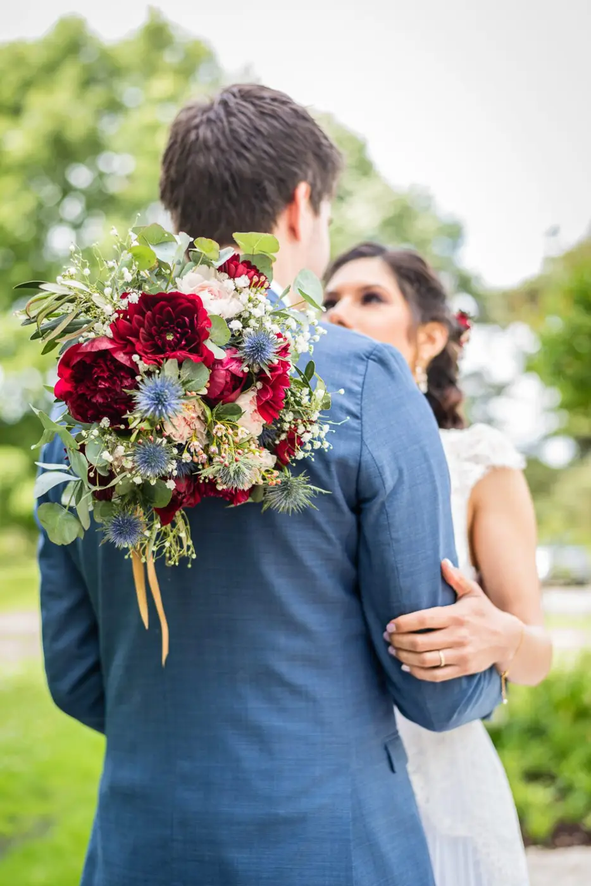
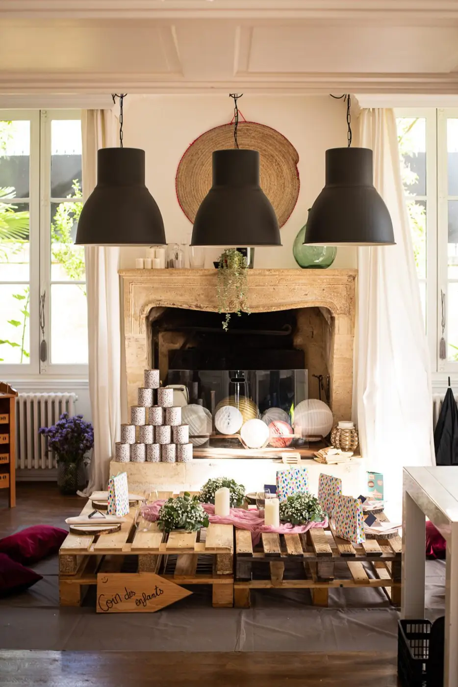
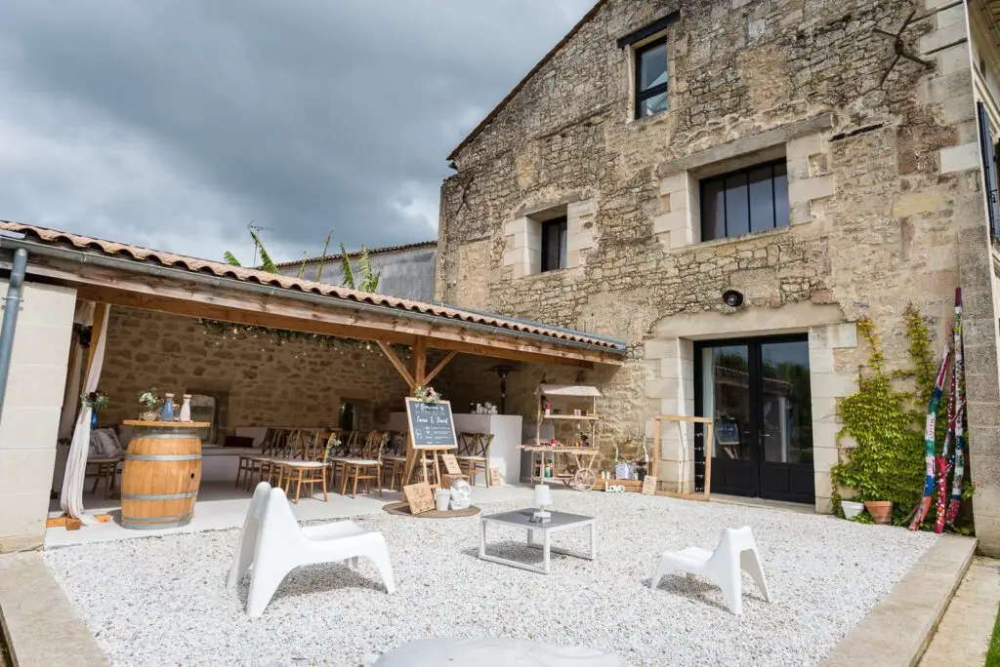
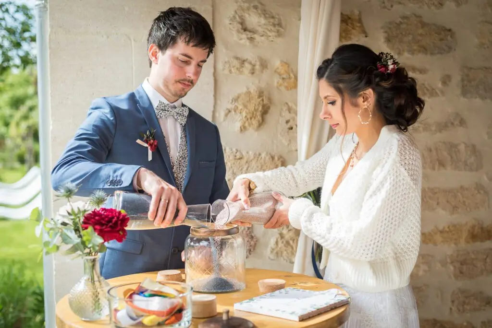

An eco-friendly wedding
You care about the environment and want to respect our planet on your wedding day? Then a 100% eco-friendly wedding is made for you!

The 100% eco-friendly wedding has become a real phenomenon, especially when there are lots of guests and lots of cars but we still want to take care of our planet and preserve it.
If you want to plan a green wedding, these are the essential steps:
THE VENUE 💒
Choose a nearby venue, as close as possible to most guests to avoid unnecessary travel, and if your family or friends aren't local, think of somewhere they can stay!
THE DECOR 💐
Whatever wedding theme you choose, think upcycling and recycling! For example, you can make your own candle holders from old jars or glass pots.
THE CATERER 🍴
Choose a caterer committed to sustainability who uses regional, local and seasonal produce for a fresh meal or buffet.
We can be mindful by choosing small local producers, a venue close to home and recyclable materials, while keeping a simple yet romantic spirit for this magical moment: just don't overdo the frills. Thanks to my training as a high-end wedding planner, I can organise your wedding in Bordeaux and the surrounding region.

THE OUTFITS 👗
To dress in an eco-friendly way, choose a second-hand dress (or suit) or simply hire your wedding dress. An approach that will please both the planet and your wallet!
THE GIFTS 🎁
Encourage your guests to give sustainable, ethical gifts that are good for the planet. Why not create a wedding list that includes and favours responsible, eco-friendly products?
THE INVITATIONS 💌
Use less paper by choosing digital invitations! And if you'd still like paper, recycled paper is a perfect alternative for the planet.
GUEST FAVOURS
Give your guests eco-friendly wedding favours! Seeds to plant, organic soaps or reusable items are perfect for the occasion, and they'll encourage your guests to adopt environmentally friendly habits.
TRANSPORT 🚗
If guests have to drive to join you, choose eco-friendly transport by encouraging car-sharing or hiring a minibus for the journeys there and back.

For this very special event, I can also offer you my network of quality wedding suppliers, including photographers, caterers, florists… and many more. I'm also here to handle all the decor for your symbolic ceremony, for example, or to decorate your reception room with environmentally friendly materials, while respecting your tastes (colours, style…).
So don't wait any longer: email me for the most beautiful bespoke eco-friendly wedding!






Lovely Day Event offers several services
Wedding planning
I step in at every stage of your preparations and guide you through your choices, bringing ideas and suggestions so that your wedding looks like no one but you.
On-the-day coordination
I will be the conductor of your day, managing the suppliers, the set-up of your decor and the smooth running of this beautiful day.
Wedding design
Creative and passionate, I am a certified Wedding Designer and I create a scenographic atmosphere that matches the theme of your wedding. Styling is included in the Signature package, or offered as an add-on to on-the-day coordination.